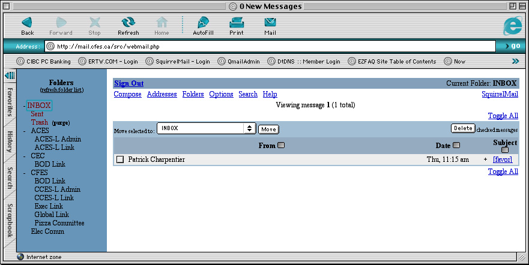
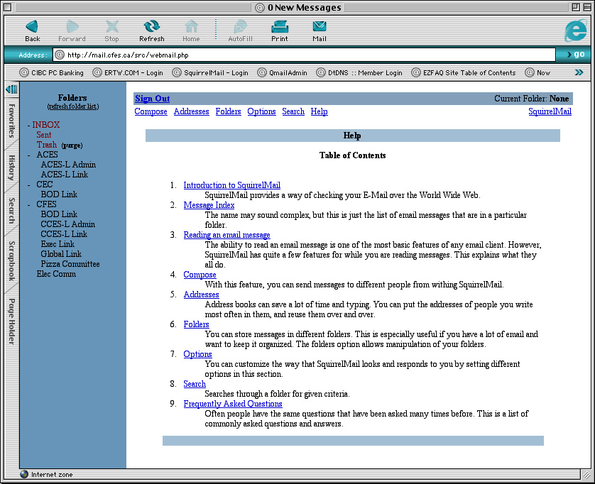

| >Main Admin Page >Email Users Guide Index |
The webmail application we have chosen is called Squirrelmail. This guide will not give actual usage instructions for Squirrelmail as the application comes with an excellent help section as show below.
Logging into Squirrelmail is a very simple matter. Simple go to http://mail.<domain>/ where domain is the domain portion of your email address The login will present you with the following type of page:
As long as you have gone to the correct domain mail page (i.e. mail.cfes.ca for a cfes.ca email account) you need only enter you username (i.e. comm for comm@cfes.ca) in the Name field Then enter your password in the Password field and click Login.
This is not given as actual help for Squirrelmail but is given as information for those that would like to see what Squirrelmail looks like. Once you have logged in the main page looks as follows:

As mentioned above Squirrelmail has an excellent Help section that can be accessed form the link at the top of every page.

{main}| >Main Admin Page >Email Users Guide Index |